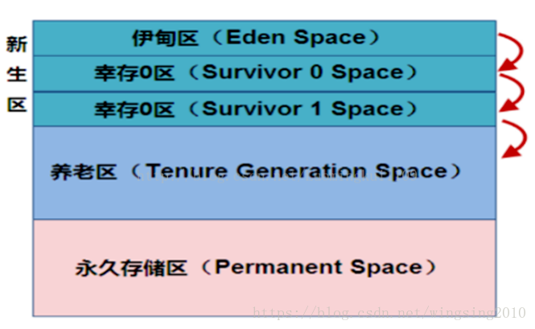

一、类方法
类方法是静态方法，前面需要有static修饰符修饰。类方法内不能涉及有关变量的内容
1、不能调用类的对象方法
2、不能引用对象变量
3、类方法不能被重写（覆盖）
4、类方法不能使用super, this关键字
二、实例方法
1、可以调用类的对象方法
2、可以引用对象变量
3、实例方法可以被重写（覆盖）
4、实例方法可以使用super, this关键字
区别
类方法在加载类时就被分配了内存地址，因此加载后即可被任意对象调用，并且可以通过类名直接调用（类名.方法名），而实例方法需要在创建对象后才会被分配内存地址
原文链接：https://blog.csdn.net/tiansheshouzuo/article/details/86188239
1 JVM运行期原理
JAVA虚拟机（JAVA Visual Machine）的主要作用在执行JAVA程序时，将涉及的内存划分为不同的区域，各区域存储的对象，创建和销毁的时间依据用途各不相同。其中，方法区和堆是在JVM启动时而创建的，为所有线程所共有；而虚拟机栈、本地方法栈和程序计数器是由用户线程创建及销毁的。
JVM是基于堆栈的虚拟机。JVM为每个新创建的线程都分配一个堆栈.也就是说,对于一个Java程序来说，它的运行就是通过对堆栈的操作来完成的。堆栈以帧为单位保存线程的状态。JVM对堆栈只进行两种操作:以帧为单位的压栈和出栈操作。
JVM执行class字节码，线程创建后，都会产生程序计数器（PC）和栈（Stack），程序计数器存放下一条要执行的指令在方法内的偏移量，栈中存放一个个栈帧，每个栈帧对应着每个方法的每次调用，而栈帧又是有局部变量区和操作数栈两部分组成，局部变量区用于存放方法中的局部变量和参数，操作数栈中用于存放方法执行过程中产生的中间结果。
2 JVM内存详解
2.1 方法区(method)
它保存方法代码(编译后的java代码)和符号表。存放了要加载的类信息、静态变量、final类型的常量、属性和方法信息。JVM用持久代（Permanet Generation）来存放方法区，可通过-XX:PermSize和-XX:MaxPermSize来指定最小值和最大值。
2.2 堆内存(heap)
所有通过new创建的对象的内存都在堆中分配，其大小可以通过-Xmx和-Xms来控制。
操作系统有一个记录空闲内存地址的链表，当系统收到程序的申请时，会遍历该链表，寻找第一个空间大于所申请空间的堆结点，然后将该结点从空闲结点链表中删除，并将该结点的空间分配给程序，另外，对于大多数系统，会在这块内存空间中的首地址处记录本次分配的大小，这样代码中的delete语句才能正确的释放本内存空间。但由于找到的堆结点的大小不一定正好等于申请的大小，系统会自动的将多余的那部分重新放入空闲链表中。这时由new分配的内存，一般速度比较慢，而且容易产生内存碎片，不过用起来最方便。另外，在WINDOWS下，最好的方式是用VirtualAlloc分配内存，它不是在堆，也不是在栈，而是直接在进程的地址空间中保留一块内存，虽然这种方法用起来最不方便，但是速度快，也是最灵活的。堆内存是向高地址扩展的数据结构，是不连续的内存区域。由于系统是用链表来存储的空闲内存地址的，自然是不连续的，而链表的遍历方向是由低地址向高地址。堆的大小受限于计算机系统中有效的虚拟内存。由此可见，堆获得的空间比较灵活，也比较大。
堆这块区域是JVM中最大的，应用的对象和数据都是存在这个区域，这块区域也是线程共享的，也是 gc 主要的回收区，一个 JVM 实例只存在一个堆类存，堆内存的大小是可以调节的。类加载器读取了类文件后，需要把类、方法、常变量放到堆内存中，以方便执行器执行，堆内存分为三部分：

① 新生区
新生区是类的诞生、成长、消亡的区域，一个类在这里产生，应用，最后被垃圾回收器收集，结束生命。新生区又分为两部分：伊甸区（Eden space）和幸存者区（Survivor pace），所有的类都是在伊甸区被new出来的。幸存区有两个：0区（Survivor 0 space）和1区（Survivor 1 space）。当伊甸园的空间用完时，程序又需要创建对象，JVM的垃圾回收器将对伊甸园进行垃圾回收（Minor GC）,将伊甸园中的剩余对象移动到幸存0区。若幸存0区也满了，再对该区进行垃圾回收，然后移动到1区。那如果1去也满了呢？再移动到养老区。若养老区也满了，那么这个时候将产生Major GC（FullGCC），进行养老区的内存清理。若养老区执行Full GC 之后发现依然无法进行对象的保存，就会产生OOM异常“OutOfMemoryError”。
如果出现java.lang.OutOfMemoryError: Java heap space异常，说明Java虚拟机的堆内存不够。原因有二：
a.Java虚拟机的堆内存设置不够，可以通过参数-Xms、-Xmx来调整。
b.代码中创建了大量大对象，并且长时间不能被垃圾收集器收集（存在被引用）。
② 养老区
养老区用于保存从新生区筛选出来的 JAVA 对象，一般池对象都在这个区域活跃。
③ 永久区
永久存储区是一个常驻内存区域，用于存放JDK自身所携带的 Class,Interface 的元数据，也就是说它存储的是运行环境必须的类信息，被装载进此区域的数据是不会被垃圾回收器回收掉的，关闭 JVM 才会释放此区域所占用的内存。
如果出现java.lang.OutOfMemoryError: PermGen space，说明是Java虚拟机对永久代Perm内存设置不够。原因有二：
a. 程序启动需要加载大量的第三方jar包。例如：在一个Tomcat下部署了太多的应用。
b. 大量动态反射生成的类不断被加载，最终导致Perm区被占满。
说明：
Jdk1.6及之前：常量池分配在永久代 。
Jdk1.7：有，但已经逐步“去永久代” 。
Jdk1.8及之后：无(java.lang.OutOfMemoryError: PermGen space,这种错误将不会出现在JDK1.8中)。
2.3 虚拟机栈(stack)
① 栈是什么
栈也叫栈内存，主管Java程序的运行，是在线程创建时创建，它的生命期是跟随线程的生命期，线程结束栈内存也就释放，对于栈来说不存在垃圾回收问题，只要线程一结束该栈就Over，生命周期和线程一致，是线程私有的。
基本类型的变量和对象的引用变量都是在函数的栈内存中分配。
② 栈存储什么？
栈帧中主要保存3类数据：
本地变量（Local Variables）：输入参数和输出参数以及方法内的变量；
栈操作（Operand Stack）：记录出栈、入栈的操作；
栈帧数据（Frame Data）：包括类文件、方法等等。
2.4 程序计数器(counter)
每个线程都有一个程序计算器，就是一个指针，指向方法区中的方法字节码（下一个将要执行的指令代码），由执行引擎读取下一条指令，是一个非常小的内存空间。
JAVA中采用可达性算法来做计数器的：把一系列“GC Roots”作为起始点，从节点向下搜索，路径称为引用链，当一个对象到GC Roots没有任何引用链相连，即不可达时，则证明此对象时不可用的。
在Java中可作为GCRoots的对象包括：
1).虚拟机栈（栈帧中的本地变量表）中引用的对象；
2).方法区中类静态属性引用的对象；
3).方法区中常量引用的对象；
4).本地方法栈中JNI引用的对象
2.5 本地方法栈(local method)
用于支持native方法的执行，存储了每个native方法调用的状态。对于本地方法接口，实现JVM并不要求一定要有它的支持，甚至可以完全没有。Sun公司实现Java本地接口(JNI)是出于可移植性的考虑，当然我们也可以设计出其它的本地接口来代替Sun公司的JNI。但是这些设计与实现是比较复杂的事情，需要确保垃圾回收器不会将那些正在被本地方法调用的对象释放掉。
2.6 总结
1 package com.spark.jvm;
2 public class HelloJVM {
3 //在JVM运行的时候会通过反射的方式到Method区域找到入口方法main
4 public static void main(String[] args) {//main方法也是放在Method方法区域中的
5 /**
6 * student(小写的)是放在主线程中的Stack区域中的
7 * Student对象实例是放在所有线程共享的Heap区域中的
8 */
9 Student student = new Student("spark");
10 /**
11 * 首先会通过student指针（或句柄）（指针就直接指向堆中的对象，句柄表明有一个中间的,student指向句柄，句柄指向对象）
12 * 找Student对象，当找到该对象后会通过对象内部指向方法区域中的指针来调用具体的方法去执行任务
13 */
14 student.sayHello();
15 }
16 }
17
18 class Student {
19 // name本身作为成员是放在stack区域的但是name指向的String对象是放在Heap中
20 private String name;
21 public Student(String name) {
22 this.name = name;
23 }
24 //sayHello这个方法是放在方法区中的
25 public void sayHello() {
26 System.out.println("Hello, this is " + this.name);
27 }
28 }